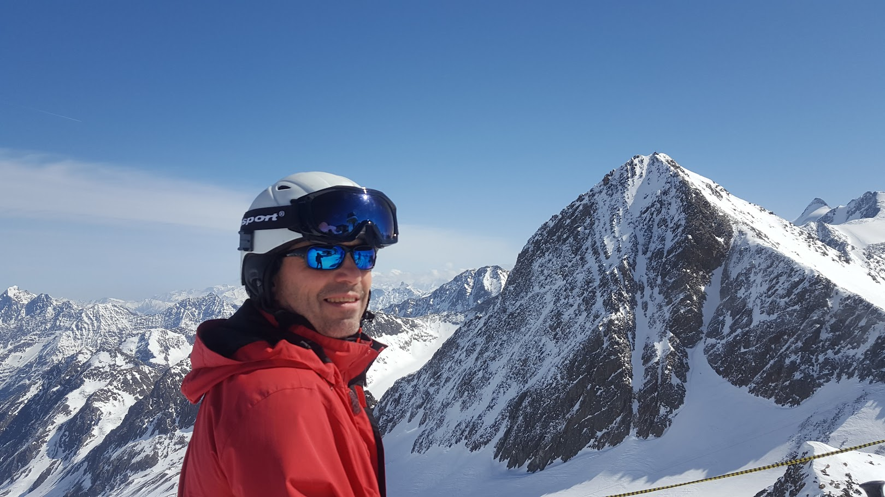

Dynalife Project
Participacion en un proyecto centrado en el analisis de datos biologicos y sistemas complejos dentro de un entorno colaborativo internacional.
Informatica, escritura e investigacion
Doctor en Informatica y escritor argentino. Su recorrido reune desarrollo de software, investigacion interdisciplinaria y una practica sostenida de escritura centrada en la experiencia personal y sus resonancias colectivas.

Proyectos
Actualmente participa en iniciativas interdisciplinarias que combinan tecnologia, ciencia de datos y biologia, explorando formas de modelar y entender sistemas complejos.
Participacion en un proyecto centrado en el analisis de datos biologicos y sistemas complejos dentro de un entorno colaborativo internacional.
Integracion de herramientas computacionales, modelado y analisis interdisciplinario para abordar problemas en biologia y ciencias de la vida.
Publicaciones
A lo largo de su trayectoria academica participo en publicaciones sobre calculo lambda, lenguajes de especificacion, UML y diseno de aplicaciones web.
Extending UML to model navigation and presentation in web applications
56 citas
On the expressive power of pure OCL
61 citas
Using UML to design hypermedia applications
Amplia difusion academica
Mi trabajo academico se centro en entender como los lenguajes formales pueden describir sistemas complejos sin perder la conexion con problemas reales de modelado y diseno.
Formacion
03/1983 - 11/1988
Dipl. in Computer Science.
07/1990 - 03/1995
Dr. rer. nat.
Trayectoria
La informatica aporto metodo, trabajo colectivo y una forma de pensar el mundo desde la arquitectura y la logica. La escritura devolvio la duda, la escucha y la posibilidad de mirar las experiencias como materia narrativa.
Este sitio reune ambas dimensiones como parte de un mismo recorrido: una manera de dar estructura a la experiencia y, al mismo tiempo, convertir esa experiencia en sentido.
Investigacion
Ademas de su trayectoria en informatica, participo en investigacion en biologia molecular y bioinformatica, colaborando con equipos internacionales en temas vinculados a enfermedades infecciosas.
The Knock-Down of the Chloroquine Resistance Transporter PfCRT Is Linked to Oligopeptide Handling in Plasmodium falciparum
Publicado en Microbiology Spectrum.
El trabajo forma parte de una linea centrada en los mecanismos de resistencia a la malaria, integrando biologia experimental y analisis computacional.
Ciclismo
Una parte importante de la vida transcurre sobre la bicicleta. Interesan los recorridos de larga distancia, donde el tiempo se expande y el viaje se vuelve experiencia.
Estos recorridos no son solo deportivos: tambien son una forma de exploracion, de observacion lenta del mundo y de conexion entre el cuerpo, el paisaje y el tiempo.